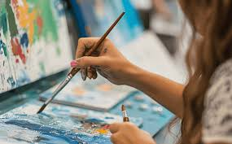

Reading
Reading is very important for your brain and it is very fun too. There are a lot of genres to chose from. Some of the genres are horror,thillers,fanstasy,non-fiction etc.There is something for everyone.It's also a way to relax, learn new things, and expand your knowledge and vocabulary.

Knitting
Knitting is truly such a relaxing and innocent hobby—
it's meditation but with added cozy feelings and homemade treats at the end.
The repetition is extremely calming, so it's perfect for stress management,
and it even improves your attention, memory, and even elementary math skills because of all the math and pattern-following.
It’s also a super creative outlet—you can play with colors, textures, and designs to make things like scarves, sweaters, or even plushies, basically turning yarn into wearable art.
In all, it's an easy-to-learn, stress-free, and somewhat legendary hobby.

Painting
painting offers creative expression, stress relief, and cognitive benefits. It's a visual art form where we can express overselves freely using paint often with brushes.
anyone can start painting regardless of skill level or talent.

Crochet
Crocheting is a form of needle craft where yarn is transformed into textured fabric by using a hooked needle.
Crocheting also involves a process where stitches are made by using the crochet hook to loop and pull yarn through the loop. Crochet can be done with just one hook and any type of yarn and has many different uses.
It’s one of the easiest crafts to learn and is great for beginners.